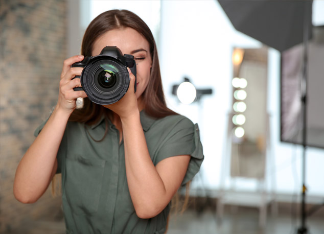

Paragraph on Photography For Students
Photography is the art, science, and practice of creating durable images by recording light or other electromagnetic radiation, either electronically by means of an image sensor, or chemically by means of a light-sensitive material such as photographic film. In today’s digital world, photographers use state-of-the-art cameras and sophisticated software to create stunning images. But photography is not just about high-tech tools. The heart of photography is the creative process, and the skill and artistry of the photographer.
Photography
Is the art of taking pictures with a device called a camera. These pictures can be either stored as a soft copy or they can be printed on photographic papers, into copies called photographs.
The basics of photography
500 words essay on photography
Photography is one of the ways to show their creative skills and life from a different outlook. There are several factors that determines the value of any image such as its color, lighting, creativity, its distinctiveness, background, charm, shooting time, shooting location, and the meaning that hides behind it. These are also the factors that differentiates an ordinary image from an impactful one. It is an art that helps in capturing beautiful moments in life, and cherish for future. It can be a natural scenery, a painting, an expression, a building, etc.
What You Need to Include and How to Write One
Check out this article to learn more about how to create a beautiful resume for your future career as a professional photographer.
A photographer is someone who takes pictures. They do this in order to tell stories, to create memories, or to document the world. A photographer’s job is not for everyone. It requires a lot of creativity and knowledge, patience and persistence, and an eye for beauty. As you’re preparing to start your career in photography, it’s important that you put together a resume that will help you land your dream gig. Here are some tips on what you need to include and how to write one.
Choose the Right Format for your Photographer Resume
There are a few different formats photographers choose to use for their resumes. They may choose to go the traditional route and write a text-heavy resume using bullet points or they might want to make it more visually interesting by creating an infographic resume. This infographic resume is a lot more visual, but may take more time to create.
How to Write Resume Summary or Resume Objective for Photographer
The objective of the resume summary for a photographer is to entice potential clients with your photography skills and highlight what you can offer their business. Your photo resume should be tailored to the job you’re applying for and should mention any experience, skills, and education that would make you a viable candidate.
Keep in mind that you only have a few seconds to capture the attention of your potential employer. Think about it this way: when someone skims over your photo resume, they’ll usually decide in less than ten seconds if they want to read more or not.

It’s also important that you include any specific skills that might only apply to certain types of photography. For example, if you are a portrait photographer, it would be important to mention which poses and expressions you are skilled at capturing.